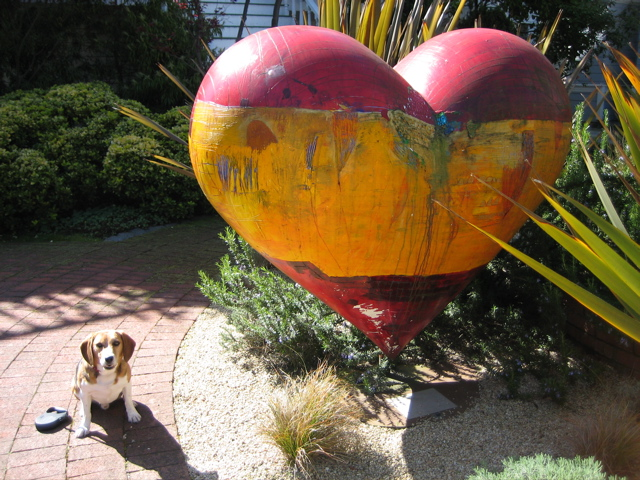

<--Previous
Up
Next-->

Wired to be United
This heart by Alan Chin is in a yard on the south side of Oak Street just west of Divisadero. It's mounted and displayed backwards, so you can't see the telephone pole which gives the piece it's name.